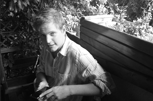

I am a game designer, currently operating out of Stockholm, Sweden. I am currently employed at Embark Studios, where I practice my craft with an emphasis on the technical side.
Interested in a broad spectrum of topics in the realm of design, I feel confident to go in-depth where needed and apply my technical skills and problem-solving attitude.
I am a digital tinkerer and like to explore the bounds and possibilities of any given system. Eager to learn new tricks and broaden my horizon, I do not look in just one place to find inspiration. I strive to leverage the power of procedural solutions and systemic design to create beautiful, user-centric products.
I was previously at Starbreeze Studios as a technical designer, and before that I got my bachelor’s in Creative Media and Game Technologies, focusing on game design and production.

Outside of the realm of game development I greatly enjoy the preparation of (and talking about) food, having worked in professional kitchens before my venture into games. My other interests include board games and fiction in many forms -- with a particular love for cyberpunk and other sci-fi.